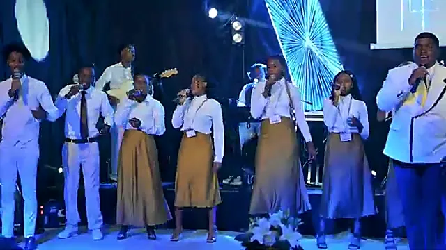
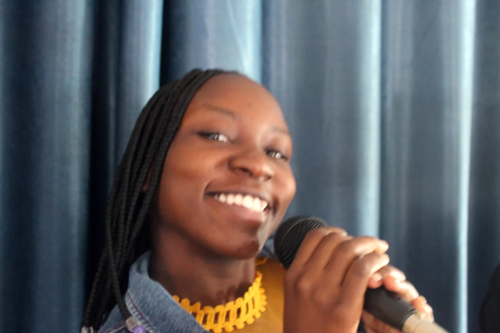
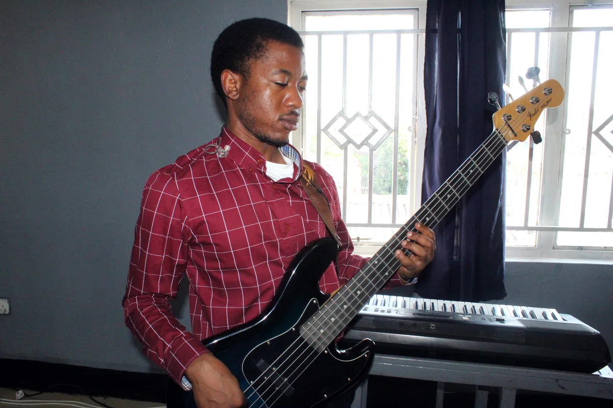
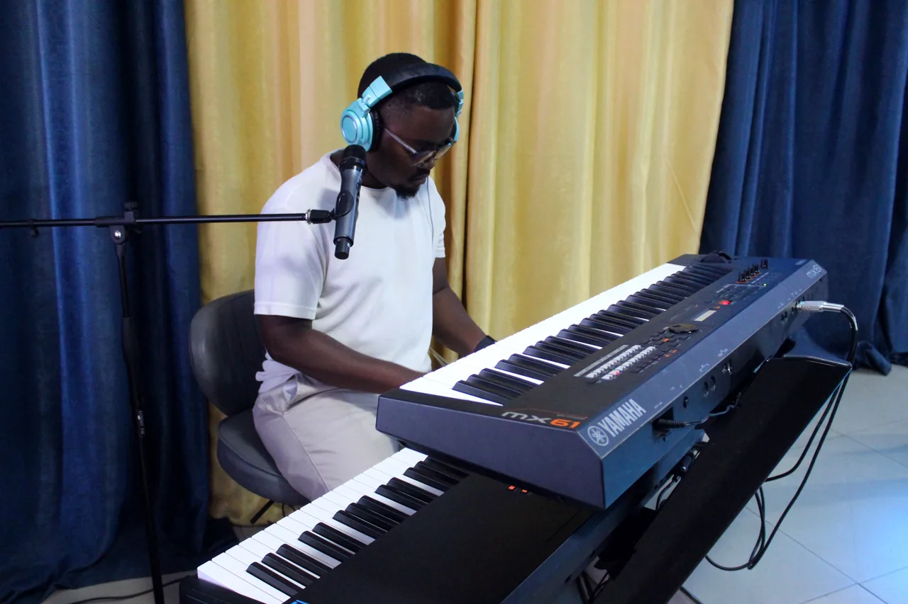
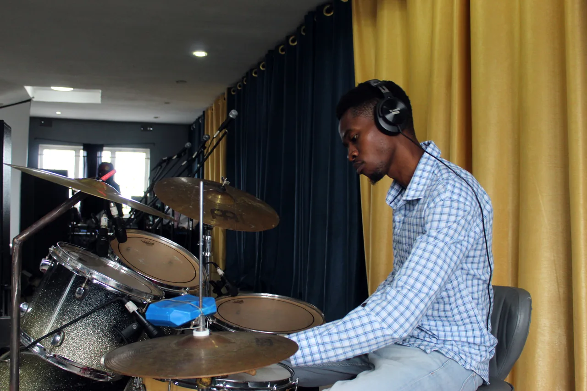
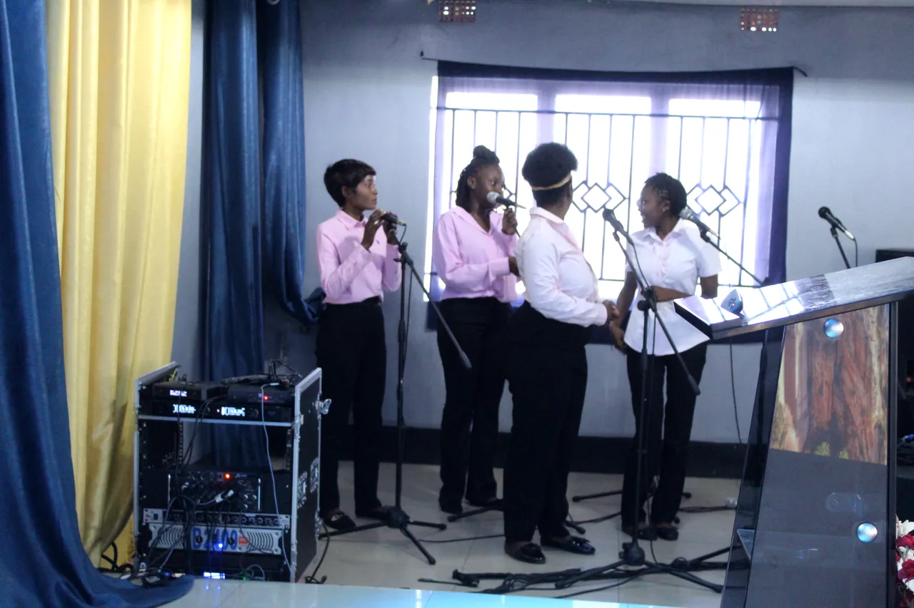
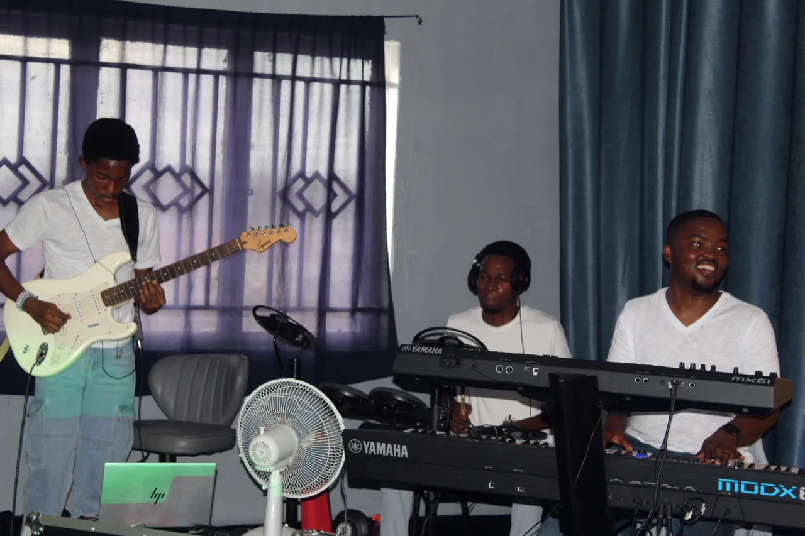

WORSHIP
CONNECT
The praise and worship team of Christ Connect Family Church Zambia. Songs in English, Bemba and Nyanja, sung so the whole family can lift one voice.

Songs we sing
The songs from our recorded sets, so you can learn them before Sunday. Tap a song to jump to the set it is in.





Who is on the team
VocalsLead singers and the choir, in three languages
BandKeys, guitars, bass and drums
SoundFront of house, monitors and recording
MediaLyrics, cameras and the videos you watch here

Can you sing,
play or mix?
Worship Connect is always growing. Vocalists, keys, guitar, bass, drums, sound and media: if God has given you a gift, bring it.